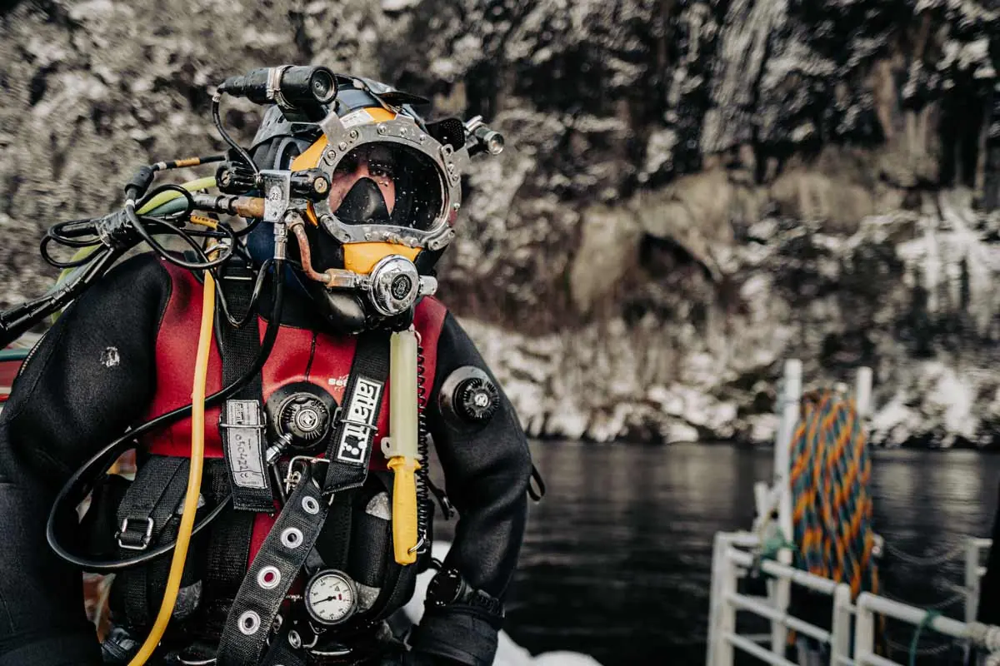
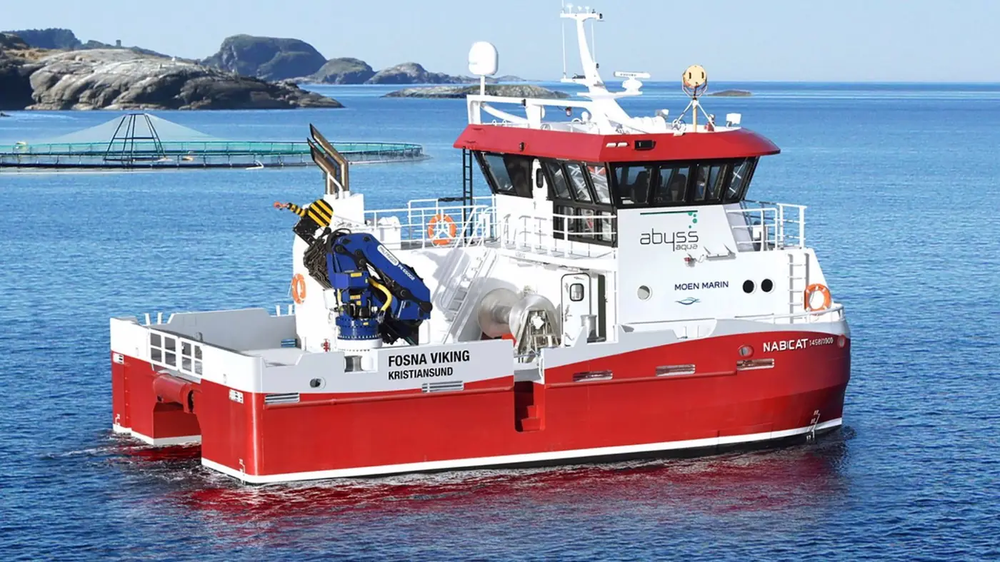

Forside / Tjenester
Tjenester
Hvert oppdrag starter med en samtale der vi blir enige om omfang, pris og tidspunkt før noe settes i gang.
Service ved anlegget
Inspeksjon, vedlikehold og praktisk støtte i den daglige driften — med mannskap og fartøy tilpasset oppdraget.
- Fast kontaktperson
- Skriftlig avklaring før oppstart
- Dokumentert gjennomføring


Rene nøter, stabil drift
Regelmessig notvask sikrer god vanngjennomstrømning og bidrar til stabile forhold i anlegget.
- Én kontakt gjennom hele saken
- Skriftlig avklaring før oppstart
- Dokumentert gjennomføring
Arbeid under vann
Inspeksjon, vedlikehold og tekniske operasjoner under vann. Med ROV og spesialisert utstyr kan arbeidet gjennomføres sikkert og presist.
- Pris avklart før oppstart
- Dykkerfartøy med spesialutstyr
- Dokumentert gjennomføring


Behandling med fiskevelferd først
Fartøyene er rigget for effektiv behandling av fisk, med kapasitet og utstyr tilpasset ulike anlegg — med særlig vekt på fiskevelferd.
- Utstyr tilpasset anlegget
- Arbeidet dokumenteres mens det pågår
- Erfarne fagfolk om bord
Om oppdrag og avklaring
Hvor raskt kan dere rykke ut?
Vakttelefonen er betjent hele døgnet. Ved akutte hendelser avklarer vi kapasitet med en gang.
Får vi pris før arbeidet starter?
Ja. Vi avklarer omfang, pris og tidspunkt skriftlig før noe settes i gang.
Kan dere ta flere tjenester i samme oppdrag?
Ja. Service, notvask, dykking og avlusing kan settes sammen etter behov.
Hva trenger dere?
Send en kort beskrivelse, så sier vi hva som er neste steg.